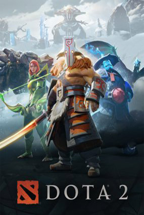

Hello, my name is...
Vii
I'm an amateur web developer, avid reader wannabe, shy person and dota player. I strive to build a website that people would love to see it and to learn anything i can learn for the rest of my life.
"I think it is possible for ordinary people to choose to be extraordinary." —Elon Musk
My Favourite Things
The Flowers of Evil
Kasuga Takao is a boy who loves reading books, particularly Baudelaire's Les Fleurs du Mal.
A girl at his school, Saeki Nanako, is his muse and his Venus, and he admires her from a distance.
One day, he forgets his copy of Les Fleurs du Mal in the classroform. On a mad impulse, he steals it.
Now everyone knows "some pervert" stole Saeki's uniform, and Kasuga is dying with shame and guilt.
Furthermore, the weird, creepy, and friendless girl of the class, Nakamura, saw him take the uniform.
Instead of revealing it was him, she recognizes his kindred deviant spirit and uses her knowledge to take
control of his life. Will it be possible for Kasuga to get closer to Saeki, despite Nakamura's meddling and
his dark secret? What exactly does Nakamura intend to do with him?
Written by: Shuuzoo Oshimi
Dota 2
Dota 2 is a free-to-play multiplayer online battle arena (MOBA) video game developed and published by Valve Corporation.
The game is the stand-alone sequel to Defense of the Ancients (DotA), which was a community-created mod
for Blizzard Entertainment's Warcraft III: Reign of Chaos and its expansion pack, The Frozen Throne.
Dota 2 is played in matches between two teams of five players, with each team occupying and defending their own separate base on the map.
Each of the ten players independently controls a powerful character, known as a "hero", who all have unique abilities and differing styles of play.
During a match, players collect experience points and items for their heroes to successfully battle the opposing team's heroes in player versus player combat.
A team wins by being the first to destroy a large structure located in the opposing team's base, called the "Ancient".
